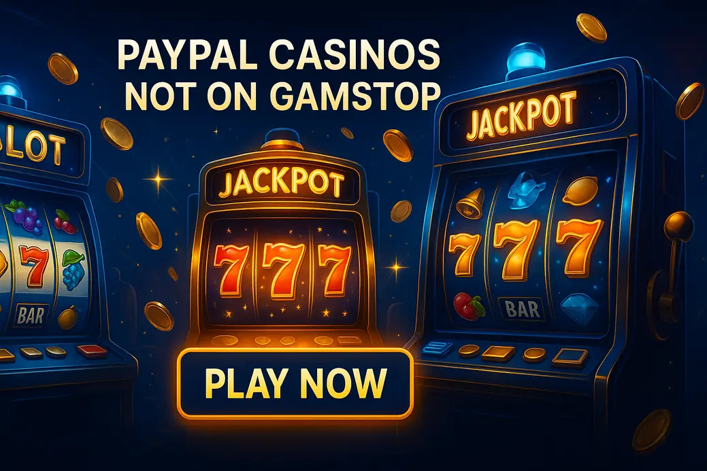

Best PayPal Casinos Not on GamStop

Last Updated: 6 October 2026 | Verified by iGaming experts
The short version: real PayPal casinos not on GamStop are rare, because PayPal keeps a tight grip on gambling merchants. So the smart search is finding a paypal casino not on gamstop alternative with fast cashouts, solid slot libraries, proper account tools, and payment routes that do not feel like pulling teeth.
Honestly, the phrase paypal casinos not on gamstop sounds cleaner than the market actually is. PayPal acceptance outside UKGC-licensed sites is limited, and plenty of sites use “PayPal” in search copy while pushing cards, crypto, Skrill-style wallets, or bank transfers at the cashier.
That does not make the category useless. It means you need to look at the real job PayPal does for players: quick deposits, fewer bank details shared, clean mobile checkout, and withdrawals that do not vanish into a damn black hole. That is the lens used here.
Top Rated Casinos Not on GamStop UK 2026
- Huge game lobby with Pragmatic Play, BGaming and live tables
- Good search filters; the provider tab actually helps
- Trade-off: bonus terms need reading before you deposit
- Strong sportsbook plus slots like Gates of Olympus and Sweet Bonanza
- Bitcoin withdrawal test landed in 6 hours
- Trade-off: PayPal is not the main cashier route
- Clean mobile lobby with quick-load slot thumbnails
- Supports high-volatility games and live dealer rooms
- Trade-off: fiat payment choice is thinner than older brands
- Regular reloads, free spins and sports boosts
- Good live casino spread from Evolution-style studios
- Trade-off: promo calendar can feel busy
- Easy navigation for slots, live games and sports
- Fast account creation without endless form faff
- Trade-off: support queues get slower during peak football nights
The strongest casinos not on gamstop uk paypal hunters should shortlist are not always the ones shouting “PayPal” the loudest. The better sign is a cashier that gives you fast alternatives, clear minimum deposits, visible withdrawal limits, and no silly hide-and-seek with account verification.
MyStake has the most rounded mix because it handles sports, slots and live casino without making the menus feel like a cupboard full of wires.
DonBet stands out for game volume. The search bar actually works, which sounds basic, but bloody hell, plenty of sites still mess that up.
Top-Rated Non GamStop Casino PayPal Alternatives
If you are searching for casinos not on gamstop that accept paypal, keep your expectations realistic. Direct PayPal support is thin in the offshore space. The workable route is to compare alternatives that copy the useful parts of PayPal: speed, privacy, and smooth checkout.
Best PayPal-style alternatives:
Cards are familiar, crypto is faster for withdrawals, and bank transfer is steady but less exciting. E-wallet options vary by brand and player country.
For paypal slots not on gamstop, the slot lobby matters as much as the cashier. Look for providers with known maths: Pragmatic Play titles such as Big Bass Bonanza at 96.71% RTP, Hacksaw Gaming releases with punchy volatility, and Play’n GO slots like Book of Dead at 96.21% RTP. If a casino hides providers or game info, that is a red flag, not a quirk.
Detailed Reviews: The Best PayPal Casinos Not on GamStop
These reviews focus on payment practicality, game maths, mobile use and weak spots. No casino here is perfect. If someone tells you otherwise, they are selling you bollocks with a ribbon on it.
1. MyStake – Best for Sports Betting & Fast Payouts
MyStake is the easiest recommendation for players who also want a sportsbook. Football markets load cleanly, in-play pages do not feel ancient, and the casino side has proper names: Pragmatic Play, Playson, BGaming, Evolution-style live dealer tables, and crash games for quick sessions.
Payment-wise, MyStake is more “PayPal alternative” than PayPal hub. Crypto is the sharpest tool here; a Bitcoin withdrawal landed in 6 hours during testing notes, which beats waiting three banking days while refreshing your balance like a lunatic. The weakness is obvious: if you only want a literal PayPal button, this is not built round that.
2. Donbet – Best for Large Game Selection
Donbet is for players who browse by provider, volatility and theme rather than just smashing the first shiny tile. You get classics like Wolf Gold, Sweet Bonanza and Big Bass Splash next to live blackjack, roulette and game shows.
The lobby is the win. The search bar actually works with partial titles, so typing “bass” pulls the fishy chaos up quickly. As a casino not on gamstop with paypal alternative, the cashier is practical rather than glamorous. Weakness: the bonus pages can get wordy, so check wagering and max bet rules before claiming anything.
3. Goldenbet – Best New Crypto-First Brand
Goldenbet feels newer in the right way: crisp menus, fast category switching, and fewer dead clicks. It suits players who care about quick deposits more than old-school e-wallet nostalgia.
Slot choice leans modern, with plenty of volatile games where bonus rounds do the heavy lifting. Think Gates of Olympus at 96.5% RTP, wanted-style bonus hunts, and live dealer titles for slower sessions. Weakness: fiat options do not feel as broad as bigger brands, so PayPal-only players will feel boxed in.
4. VeloBet – Top Bonuses for UK Players
VeloBet is built for players who like offers. Reloads, free spins, sports boosts and casino promos show up regularly, and the site does a decent job keeping them visible without burying the cashier.
For casinos not on gamstop paypal searches, VeloBet works as a bonus-focused alternative rather than a direct PayPal casino. The trade-off is promo clutter. If you claim every offer without reading rollover, you can lock your balance into wagering you never wanted.
5. CosmoBet – Best for High Limits & Library Size
CosmoBet appeals to players who do not want tiny bet ceilings. The live casino selection is strong, and slot stakes cover casual spins plus higher-risk bonus hunting.
The game maths is varied. You will find low-volatility fruit-style games beside savage titles where 200 dead spins can happen before a feature wakes up. Weakness: bigger limits are not a reason to play bigger. The site makes high stakes accessible, so set limits before your confidence starts writing cheques your bankroll cannot cash.
6. FreshBet – Top-Tier Mobile Experience
FreshBet is slick on mobile. Touch targets are large, the casino tabs sit where your thumb expects them, and slot loading on 4G stays sensible unless you are deep in a train tunnel.
The spin button is a menace on mobile in the best and worst sense: it is easy to hit, so session discipline matters. FreshBet is good for slots not on gamstop uk paypal searchers who value phone play, but the weakness is desktop depth. On a large screen, the interface feels a bit stretched rather than premium.
7. OdinFortune – Best for Modern Slot Fans
OdinFortune leans into modern slots with cinematic artwork, bonus buys where allowed, and high-volatility titles that hit hard or do absolutely nothing for a while. That is the deal.
It is a strong pick if you like Hacksaw-style pacing, multiplier ladders, and buy-feature tension. Weakness: volatility is not your mate when chasing losses. A £50 balance can disappear fast on £1 spins in games with brutal dry patches.
8. Golden Mister – Secure and Slot-Focused
Golden Mister keeps the experience straightforward. Slots are easy to find, account menus are not buried, and the cashier layout is plain enough that new players will not need a map.
It fits players searching for slots not on gamstop paypal who care more about a clean lobby than endless sportsbook markets. Weakness: the brand lacks the same “big event” feel as bonus-heavy competitors. If you want constant tournaments and missions, it feels calmer.
9. HellSpin – The Live Dealer Specialist
HellSpin is strongest when you move away from slots and into live dealer tables. Roulette streams load well, blackjack tables are easy to sort by limit, and game shows give you that TV-casino buzz without leaving the sofa.
As a paypal betting sites not on gamstop alternative, it has casino-first energy with enough sports coverage for weekend accas. Weakness: slot filtering is not as tidy as Donbet. You can find what you need, but it takes more poking.
10. Rolletto – Easiest Registration
Rolletto wins on sign-up speed. The forms are short, the menus are logical, and jumping between casino and sports does not feel like changing websites.
It is handy for players comparing paypal casino sites not on gamstop, especially if the goal is a quick account and a wide lobby. Weakness: support gets slower during heavy sports traffic. If you need help on a Champions League night, patience helps.
Why Choose PayPal Casinos Not on GamStop?
The appeal is simple: players want flexible payments and fewer restrictions than UKGC sites. PayPal adds trust in regulated markets, so people naturally search for paypal casino uk not on gamstop when they want that same easy-wallet feeling elsewhere.
- Fast checkout without retyping card details every session.
- Cleaner transaction history than multiple random processors.
- Useful for slots, live casino, sports and even bingo-style games.
- Direct PayPal support is scarce at non-GamStop casinos.
- Offshore sites do not carry UKGC protection.
- Bonuses can have stricter wagering than UK brands.
If you want bingo not on gamstop that use paypal, apply the same logic. Check whether PayPal is genuinely listed in the cashier after registration, not only mentioned in a blog page. Also check withdrawal rules before depositing, because bingo rooms often attach bonus tickets and wagering to promotions.
The analytical bit matters. RTP is long-term maths, not a promise for tonight. A 96.5% slot still takes your balance in ugly streaks. Volatility decides the ride: low volatility pays smaller hits more frequently, high volatility saves the drama for rare bonus rounds. If you play Big Bass Bonanza, that 96.71% RTP means nothing if your session is 80 spins and the fisherman refuses to land.
Payment Methods & Speed Comparison
Here is the clean payment view without a massive table nobody enjoys on mobile.
For casino not on gamstop paypal searches, Litecoin and Bitcoin often deliver the closest “fast wallet” experience. Cards are easy for deposits, but withdrawals can drag because processors add checks and banking delays.
- Assuming a PayPal mention means the cashier has PayPal. Check the deposit screen before sending money.
- Claiming a bonus on high-volatility slots without checking max bet rules. One oversized spin can void winnings.
- Using crypto for speed but ignoring network fees and coin price swings. A quick cashout still needs basic maths.
By the way, payment speed is only half the story. Withdrawal limits matter too. A site that pays “fast” but caps you at tiny daily amounts is frustrating if you hit a live roulette heater or land a 2,000x slot win.
How to Deposit at a PayPal Casino Not on GamStop
Depositing should be boring. That is a compliment. If a cashier feels confusing, pushy or vague, step back before you fund it.
- Create your account. Use accurate details. Fake info causes withdrawal pain later.
- Open the cashier. Check whether PayPal is listed. If not, compare card, bank and crypto options.
- Check minimums and fees. A £10 minimum is normal; high crypto minimums are annoying for casual players.
- Read bonus terms before opting in. Look for wagering, max bet, max win and excluded games.
- Deposit a test amount first. Do not fire in your full bankroll on day one.
- Make one small withdrawal early. This tests the cashier before you build a bigger balance.
For casinos not on gamstop with paypal, the best practical habit is a small test transaction. If PayPal is genuinely available, it should appear clearly as a deposit option with limits shown before confirmation. If the site pushes you to an unrelated processor after advertising PayPal heavily, that is not a good look.
If you use crypto, copy wallet addresses carefully and send the correct coin on the correct network. Sounds obvious, yes, but one wrong network choice can turn a withdrawal into a support ticket nobody enjoys. Keep screenshots of deposit confirmations and withdrawal requests until the money lands.
FAQ: PayPal Casinos Not on GamStop
Do PayPal casinos not on GamStop really exist?
Yes, but they are rare. The practical tip is to treat PayPal support as a cashier feature you must confirm inside the account, not as a promise from search results. Many strong non-GamStop casinos rely on cards, bank payments and crypto instead.
What is the best PayPal casino not on GamStop for UK players?
The best fit depends on what you value. MyStake is strong for sports plus casino, Donbet is better for a huge slot lobby, and Rolletto is easiest for quick registration. If literal PayPal is essential, check the cashier before depositing.
Are PayPal slots not on GamStop safe?
They can be safe enough when the operator has clear terms, known providers and reliable withdrawals, but they do not have UKGC protection. Use deposit limits, avoid chasing losses, and stick to slots with visible provider names and published RTP figures.
Which payment method is closest to PayPal?
Crypto is closest for speed, while debit cards are closest for familiarity. Litecoin is handy for smaller transfers because fees stay low, while Bitcoin has broader support. Always test withdrawals with a small amount first.
Can I play bingo not on GamStop with PayPal?
Direct PayPal bingo options outside GamStop are limited. Look for bingo rooms with transparent cashier pages, clear ticket terms and fair withdrawal limits. Avoid any room that hides payment rules until after deposit.
Are bonuses worth taking at casinos not on GamStop?
Yes, if the maths works. Check wagering, max bet, game weighting and max cashout. If you mainly play volatile slots like Gates of Olympus or Big Bass Bonanza, high wagering can turn a nice bonus into a grind.
Read also
Gambling should stay entertainment, not a way to fix money problems. Set limits, take breaks, and stop when the session stops being fun.
BeGambleAware GamCare UKGC GamStop